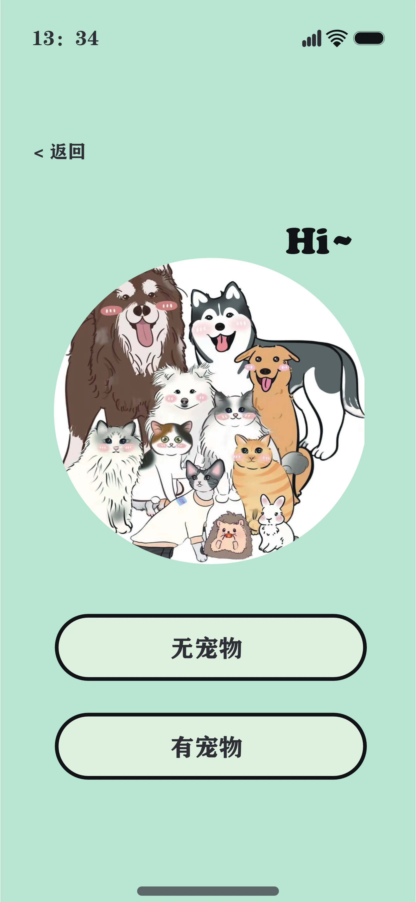
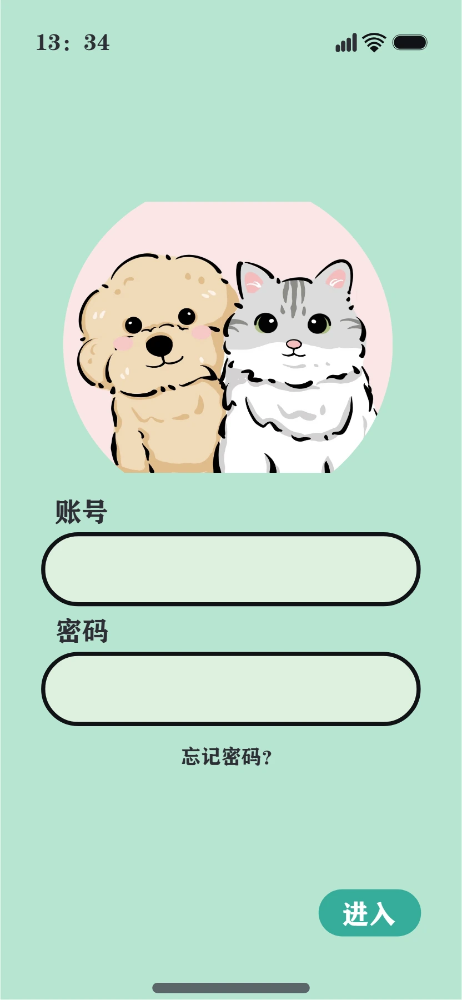

「在等你回家」
第一屏不谈功能，只给一句话和一群等着你的小动物。品牌的语气在这里就定了：它是室友，不是管理系统。
- 插画占据视觉重心，按钮退到下方安全区
- 用户协议前置勾选，避免注册后被拦
为「第一次养宠」的人做的陪伴型产品。它不教你成为专家， 只在你不确定的时候，告诉你「这样就挺好」。
趣宠 App 主要界面一览：启动、注册、首页、社交、商店。
我采访了 6 位养宠不到一年的朋友。他们提到的困难几乎没有一条是「太累」—— 喂食、铲屎、遛狗都能忍。反复出现的那句话是： 「我不知道我做得对不对。」
市面上的宠物 App 多在解决「买」和「逛」，把记录功能塞进三级页面。 可对新手来说，记录本身就是安慰——它把模糊的焦虑变成看得见的规律。
所以我把产品的重心倒过来：先是一本养宠日志，然后才是社区和商城。
把「养得好不好」这个问题，
翻译成三条可以每天打勾的线。
信息架构收成四块：主页 / 社交 / 商店 / 我的。 底部导航被画成一只猫爪——四个肉垫就是四个标签。 这不只是装饰：爪垫的圆形轮廓给了指尖一个明确的落点， 而且它让「宠物」这件事在每一屏都在场。
进入产品前还有一道岔路：「有宠物」还是「无宠物」。 有宠物的人直接进档案；还没养的人先进领养与养宠科普。 一个二选一，省掉了后面一堆空状态。
向下滚动，右侧文字会带着左边的机器一起走。



第一屏不谈功能，只给一句话和一群等着你的小动物。品牌的语气在这里就定了：它是室友，不是管理系统。
一个二选一决定了后面的整条路径。有宠物 → 建档案；没有 → 进领养。这一步把两类人分开，双方看到的都是有内容的界面。
在验证码和密码之间插入「选择喜欢的宠物（最多五个）」。它把一段枯燥的表单变成有点好玩的事，同时为首页推荐拿到了冷启动数据。
姓名、岁数、性别、生日集中在一张卡上，照片压着卡片边缘。卡下并排三个入口——睡眠、吃饭、如厕，这是每天真正会点的东西。
好友头像横排在最上，带在线／离线状态。下面是推荐、关注、同城、好友四个筛选，内容用双列瀑布流——宠物照片尺幅不一，瀑布流最省裁切。
窝、衣服、奶瓶、帐篷、书包、玩具、饭盆、洗护——4×2 排布，一屏看完不用滚。营销位（直播、秒杀、补贴）压在下面，不抢分类的位置。
全局只有一个主色：薄荷绿 #B5DCC8。它足够浅， 可以直接铺满背景而不压迫；又足够有色相，让白色卡片自然浮起来。 宠物照片的毛色多是暖调，绿色是它的补色——照片一放上去就跳出来。
圆角统一走大半径（16–24pt），配合爪垫、气泡与卡片， 整个界面没有一个尖角。形状本身就是语气。
没有一个尖角，
因为这是一件关于温柔的事。
可以左右拖动。

记录要更短。目前进入记录仍需一次跳转。 下一版我想把「今天吃了吗」做成首页可直接打勾的一行， 点一下就完成，连页面都不用换。
要有回看。记了三个月的数据现在没有出口。 周视图的趋势线才是新手真正需要的那句「你做得对」。
商店可以再退一步。它现在占了一级导航， 但新手前两周并不买东西。也许它该从「商店」变成档案里的「该补货了」。